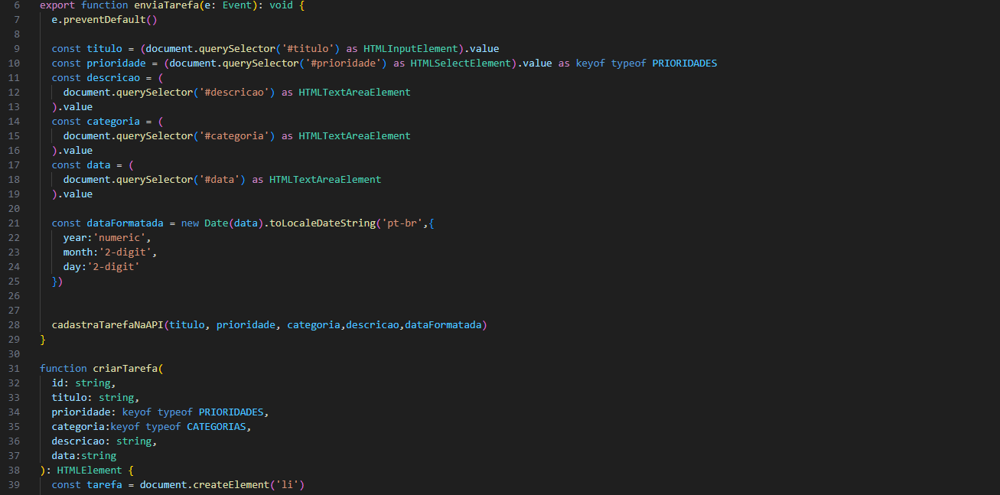
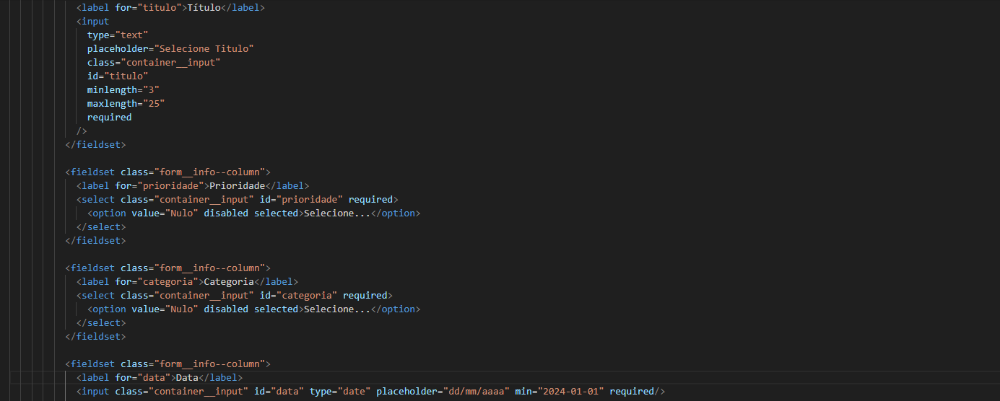
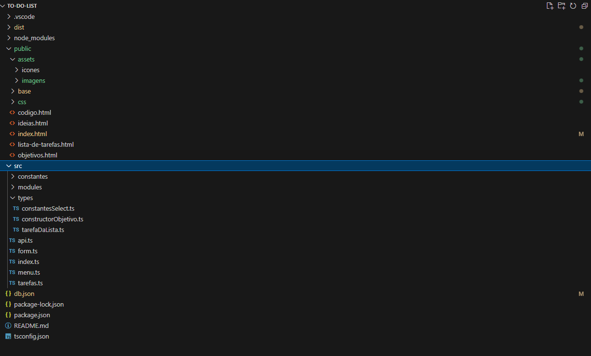
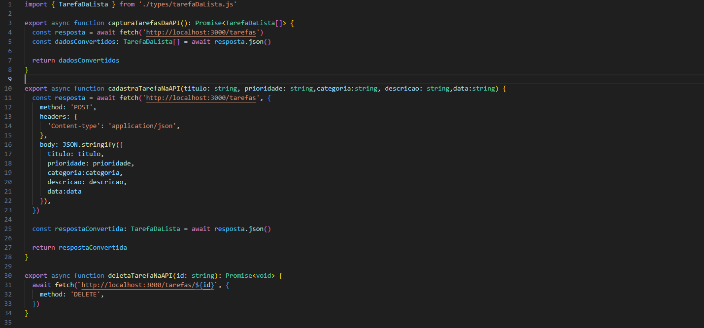
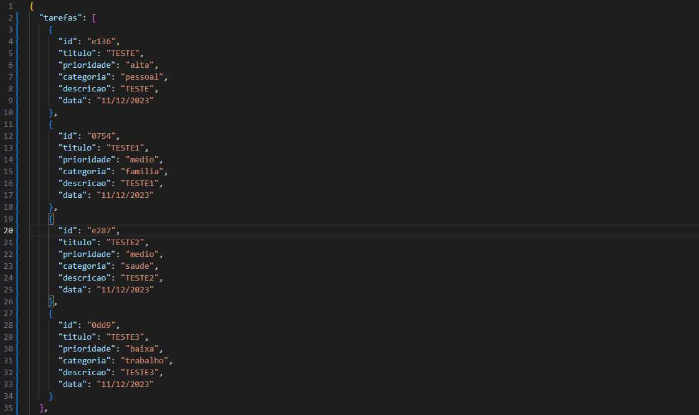
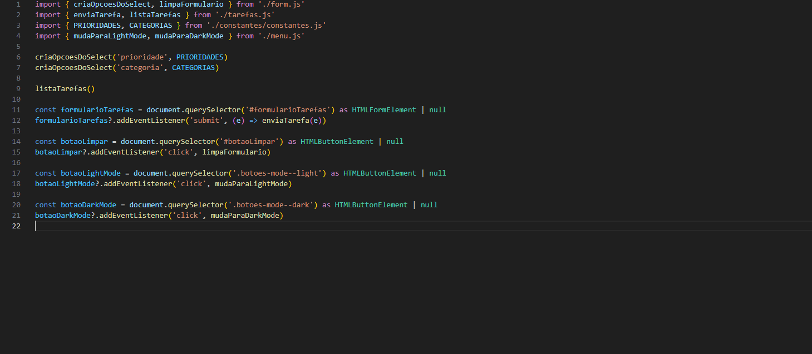
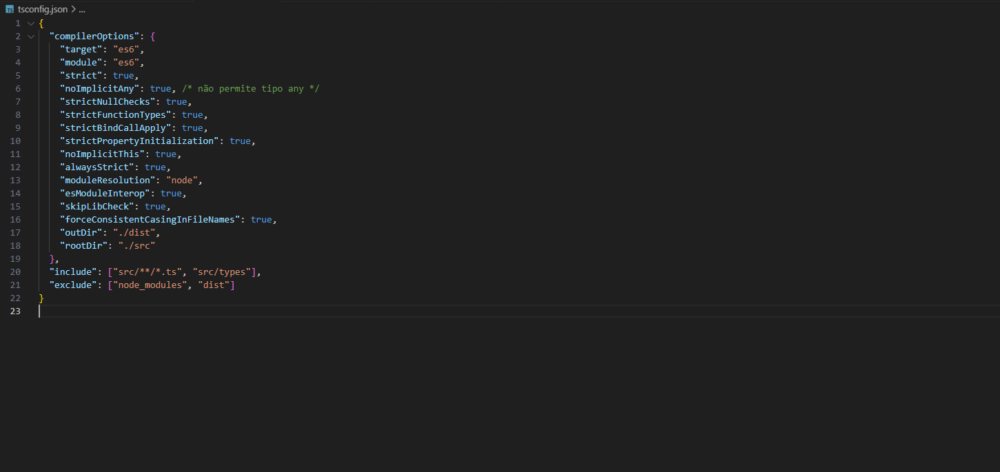
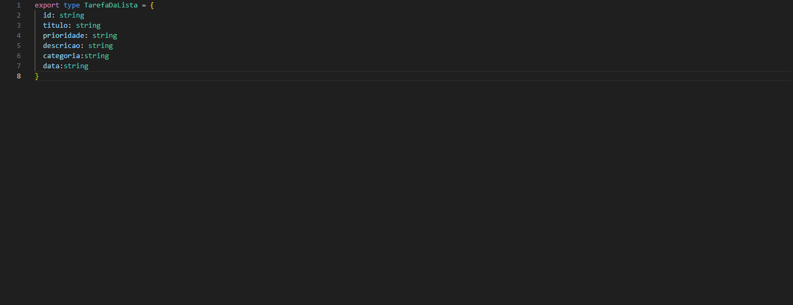
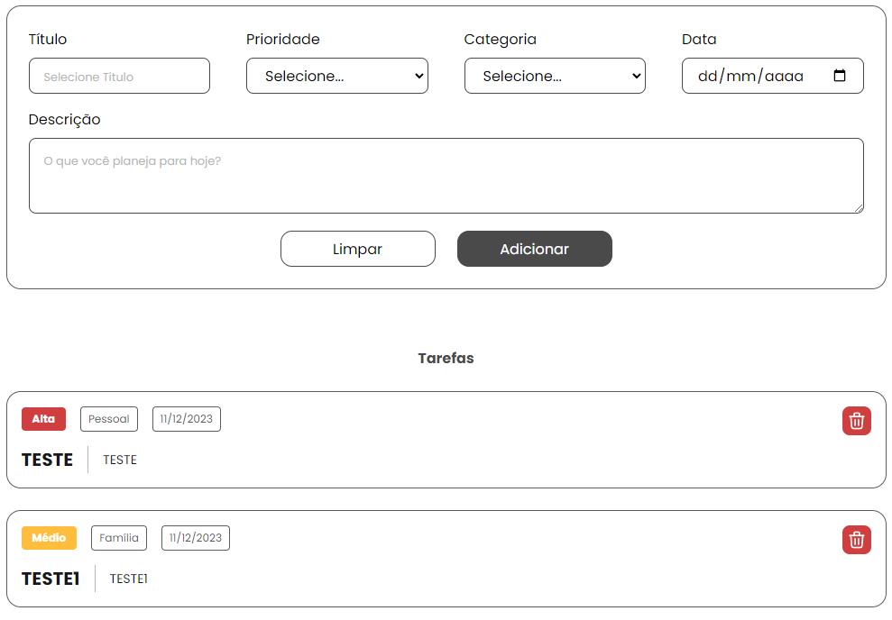

Manipulando o DOM
Começamos utilizando bastante a manipulação do DOM para trazer muita dinamicidade ao nosso projeto. Isso permite que nossa aplicação seja mais interativa e responsiva, melhorando a experiência do usuário.
Validando Formulários
Para aumentar a segurança do nosso código, aplicamos várias validações nos formulários. Estabelecemos requisitos que devem ser seguidos ao preencher os campos de input no HTML, garantindo que os dados inseridos sejam consistentes e corretos.
Definindo a Estrutura de Pastas
Adotamos uma estrutura de pastas amplamente utilizada no mercado, semelhante à padrão gerada pelo React. Esta organização facilita a manutenção e o entendimento do código, deixando claro a responsabilidade de cada pasta e arquivo.
Fazendo Requisições para API
Introduzimos as requisições para APIs utilizando o Fetch API para realizar métodos como POST, READ e DELETE. Esse foi nosso primeiro contato com a comunicação entre cliente e servidor, essencial para aplicações modernas.
Utilizando JSON Server
Para simular uma API, utilizamos o JSON Server. Essa ferramenta facilita o desenvolvimento e testes, permitindo que trabalhemos com dados simulados como se fossem provenientes de um servidor real.
Uso de um Index.ts
Segmentamos o código em diversos módulos, utilizando import e export. O arquivo index.ts foi definido como o principal responsável por "chamar" cada função, centralizando o controle das funcionalidades do projeto.
Configurando o Compilador do TypeScript
Para aumentar a robustez do código, optamos por utilizar o TypeScript. Foi necessário configurar o compilador para atender às necessidades específicas do nosso projeto, garantindo tipagem estática e evitando erros comuns em tempo de execução.
Fortalecendo a Tipagem do Código
Para aumentar a robustez do código, optamos por utilizar o TypeScript. Foi necessário configurar o compilador para atender às necessidades específicas do nosso projeto, garantindo tipagem estática e evitando erros comuns em tempo de execução.
Refatoração de Código
Recebemos um código inicial com bugs e nosso objetivo foi realizar uma refatoração geral. Além de corrigir os erros, adicionamos funcionalidades ausentes. O foco principal foi na página de tarefas e objetivos, onde criei um novo path no db.json para salvar os objetivos de forma organizada.